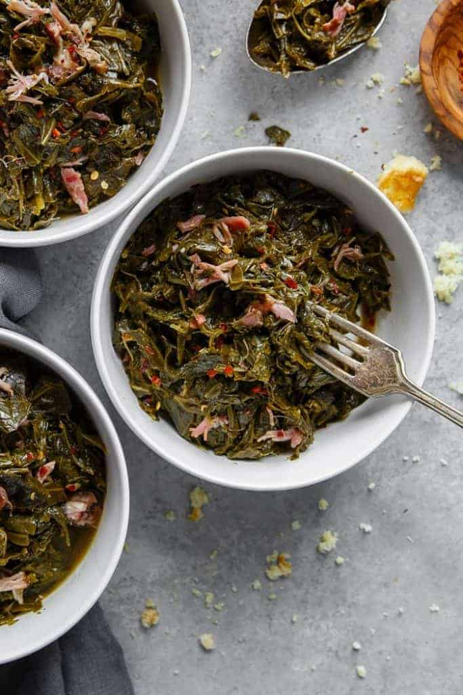

Collard Greens

Southern Greens Recipe
Description
A Southern dish that can be made with several variations of
greens an cuts of pork
Spice may be added using crushed red pepper before simmering, or
any hot sauce/ peppers the chef may want to mix in.
Ingredients
- Choice of greens
- Bacon
- 1/2 Chopped onion
- Salt and pepper to taste
- Crushed red pepper
- 2 cups of chicken stock
Steps
- Cut greens from stem
- Wash leaves in colqnder
- Roll 3-4 leaves up and cut into strips
- In a large pot, start frying 3-4 strips of bacon over medium low-heat
- While bacon is frying, peel and dice the onion, throw it in with the bacon to saute
- When the bacon is crispy, crumble it into small pieces over the onion
- Add the chopped and washed greens into the pot, stirring occasionally until they have cooked down (2-3 minutes)
- Pour chicken stock into pot, bring to a boild and then reduce to a simmer
- Simmer on a low heat for 45 minutes to an hour, serve hot, and enjoy.